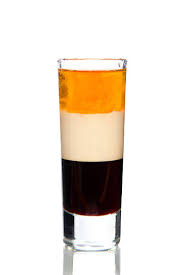

B-52 Recipe

Description
The B-52cocktail is a layered shot composed of a coffee liqueur,
an Irish cream and a Grand Marnier.
When prepared properly, the ingredients separate into three distinctly visible layers.
Ingredients
- 1/3 ounce Grand Manier
- 1/3 ounce coffee liquere
- 1/3 ounce Irish cream
Steps 1 drink
- Pour the coffee liqueur into a shot glass
- Slowly layer the Irish cream on top of the coffee liqueur
- Slowly layer the Grand Marnier on top of the Irish cream
- Set ur heart ablaze